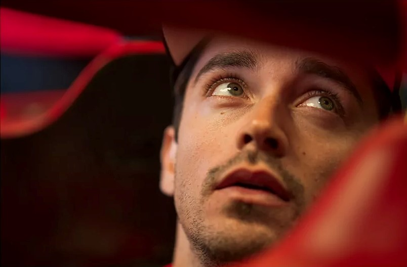
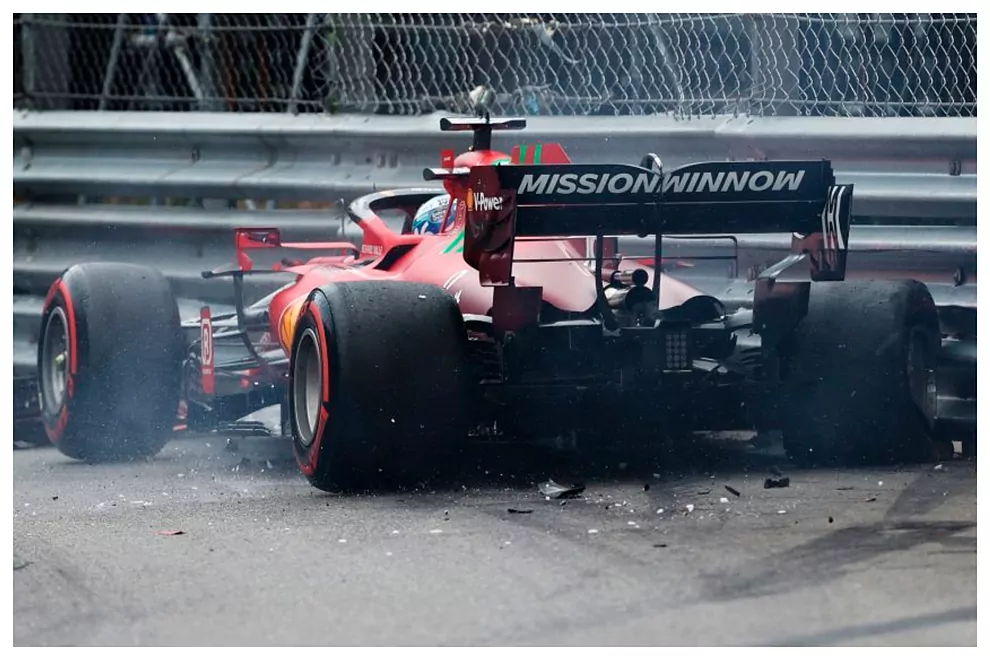

Leclerc y la maldición de Mónaco: cuando correr en casa es una pesadilla
Charles Leclerc está firmando un discreto arranque de campeonato. El que fuera subcampeón en 2022 sólo ha sido capaz de brillar en Bakú. En el Gran Premio de Azerbaiyán sumó 22 puntos (y dicho sea de paso se hizo con la pole). Del resto de carreras sacó un paupérrimo botín (12p): dos séptimas posiciones y dos abandonos. Como consecuencia de ello, el monegasco ocupa la séptima plaza en la general de pilotos (34p). Pues bien, ahora le viene la carrera de casa. Como siempre, el '16' estará muy motivado por razones obvias. Aunque esta vez espera que el resultado sea muy diferente al de otras ocasiones. Y es que correr por esas calles del Principado, que tan bien conoce, le suele traer mala suerte.
El desastre que fue el año 2022
El colmo fue el año pasado. Leclerc logró la pole, pero una pésima decisión estratégica de Ferrari le condenó a ser cuarto. No rascó podio cuando era el máximo favorito... y más si se tiene en cuenta que partía primero en un trazado donde es (casi) imposible adelantar.
Un largo historial de desgracias
Pero el gafe del joven competidor de 25 años no se limita sólo a esa cita en el trazado de Montecarlo. Su maldición viene de tiempos más pretéritos. Cuando corría en la F2 en 2017 se tuvo que retirar tras una carrera en la que parecía que su victoria estaba asegurada. Ese año ganó el certamen, pero se quedó con la espina clavada de la carrera en casa. Ese título le llevó a ganarse un asiento en Alfa Romeo F1 con vistas al curso 2018. Y de nuevo sufrió un naufragio en el Principado. En la qualy sólo pudo ser 14º. Y en la prueba del domingo le fallaron los frenos traseros y se chocó con el Toro Rosso de Brendon Hartley. Obviamente, no pudo acabar el evento. Al año siguiente, ya en las filas de la Scuderia, se volvió a repetir la pesadilla. La clasificación fue un desastre y se tuvo que conformar con ser 15º. Eso le hizo arriesgar demasiado al día siguiente. Quería brillar y la ansiedad le hizo cometer un error. En la vuelta 11 se estrelló contra el muro al intentar adelantar al Renault de Nico Hulkenberg. Pinchazo y nuevo K.O.
Más desastres que le ocurrieron al piloto monegasco en este circuito
En 2020 no se corrió en Mónaco. Se suspendió la cita más glamurosa del calendario por la pandemia de coronavirus. Un año después sí que se celebró el gran premio en el feudo del monegasco. El '16' conquistó la pole de una forma rara. Se fue contra el muro y sus rivales no le pudieron arrebatar la posición privilegiada en la Q3. El problema es que ese accidente le provocó problemas con la caja de cambios. Pero Ferrari decidió que saliera a pista... y cuando se dirigía a la parrilla le surgió un problema con el eje de transmisión izquierdo que le negó la posibilidad de participar en el evento que más le motiva. Y ya el año pasado sucedió lo anteriormente comentado. Lo tenía todo a favor hasta que apareció la lluvia. Encima Ferrari no acertó con el plan a seguir y el monegasco se vio condenado a ser cuarto. La carrera la ganó de forma sorprendente Checo Pérez.
Lo que le faltaba para seguir con la mala suerte
Y eso no es todo. A mediados de mayo de 2022, Leclerc estampó en La Rascasse uno de los monoplazas más icónicos de la historia de la F1 durante el Gran Premio Histórico de Mónaco. Al volante del Ferrari 312 B3 que Niki Lauda pilotó durante la temporada de 1974 se estrelló de forma lamentable. De nada le sirvió conocer al dedillo esas calles. Una vez más se vio en una tesitura bochonorsa. "Cuando pensabas que ya habías tenido toda la mala suerte del mundo en Mónaco y pierdes los frenos en La Rascasse con uno de los coches más icónicos de la historia de la F1", compartió el '16' en las redes sociales